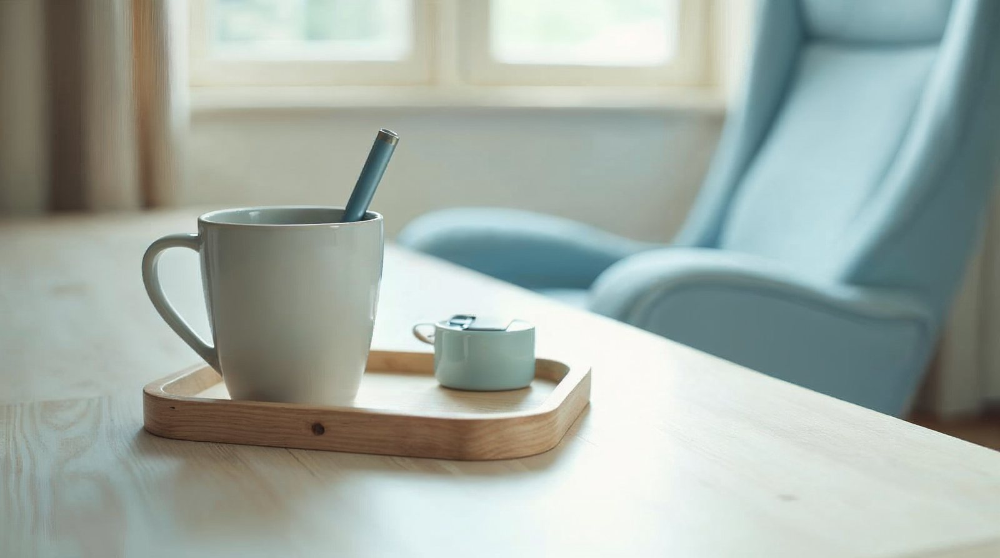
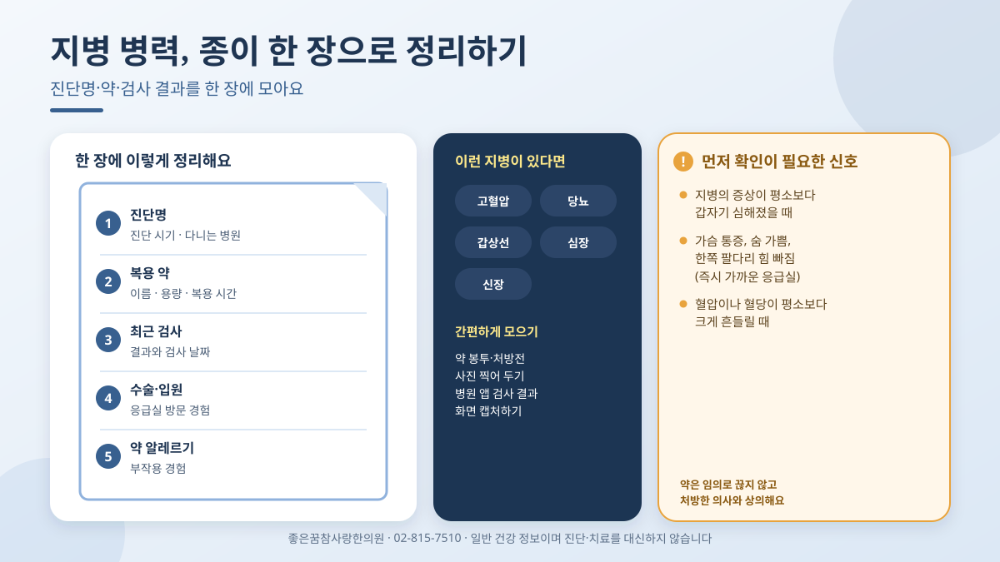

이종호 한의사 감수좋은꿈참사랑한의원 대표원장 (한의사 면허번호 19769)발행 2026-11-23 · 수정 2026-11-26
이 글의 차례
- 왜 병력을 정리해야 할까요
- 한 장 정리, 이런 순서로 써 보세요
- 먼저 이렇게 여쭙니다
- 지병별로 함께 적어 두면 좋은 것
- 휴대폰으로 정리할 때는 이렇게 해 보세요
- 일상에서 먼저 해 볼 수 있는 것
- 예를 들면 이런 경우입니다
- 지병이 있어도 한의원 진료를 받을 수 있을까요?
- 한의원에서 함께 살필 수 있는 경우
- 지병 정보는 한의원 진료에서 어디에 쓰이나요?
- 왜 지병이 오래될수록 정리가 어려워질까요?
- 자주 하는 오해
- 스스로 점검해 보세요
- 이렇게 기록해 오시면 상담이 쉬워집니다
- 진료 당일 아침에는 이것만 확인해 주세요
- 약 이름을 모를 때는 이렇게 확인해 보세요
- 얼마나 지켜보고, 언제 확인하면 좋을까요
- 처음 오시면 이렇게 진행합니다
- 정리 메모를 고칠 때 놓치기 쉬운 것
- 이런 증상은 먼저 확인이 필요합니다
- 함께 읽으면 좋은 글
고혈압, 당뇨, 갑상선, 심장, 신장 같은 지병이 있다면 진단명과 시기, 복용 중인 약, 최근 검사 결과를 종이 한 장이나 휴대폰 메모 하나에 정리해 오시면 충분합니다. 진료 시간에 모든 병력을 말로 설명하기는 어렵지만, 한 장으로 정리해 두면 빠짐없이 전할 수 있습니다. 이 정보는 한약과 치료 방법을 안전하게 정하는 기준이 됩니다.
왜 병력을 정리해야 할까요
- 지병과 복용 약에 따라 한약 처방과 치료 방법을 조정해야 할 수 있습니다.
- 약 이름과 용량을 정확히 알아야 겹치는 부분이 없는지 확인할 수 있습니다.
- 최근 검사 결과를 보면 지금의 불편이 지병과 이어져 있는지 가늠하기 쉬워집니다.
- 진료 시간이 짧아도 중요한 정보를 놓치지 않을 수 있습니다.
한 장 정리, 이런 순서로 써 보세요
- 첫 줄: 작성한 날짜
- 둘째 묶음: 진단받은 병 이름과 진단 시기, 다니는 병원과 진료과
- 셋째 묶음: 지금 먹는 약 이름, 한 번에 먹는 양, 하루 몇 번, 언제부터
- 넷째 묶음: 최근 검사 이름과 날짜, 의사에게 들은 한 줄 설명
- 다섯째 묶음: 수술·입원·응급실 방문, 약이나 음식 알레르기
- 마지막 줄: 요즘 가장 불편한 것 한두 가지
정해진 양식이 있는 것은 아니지만, 이 순서로 적어 두면 위에서부터 차례로 읽기만 해도 필요한 정보가 대부분 나옵니다. 글씨가 서툴러도, 맞춤법이 틀려도 괜찮습니다. 빠진 칸은 진료 때 함께 채우면 됩니다.
한 번 만들어 두면 다른 병원이나 약국에 갈 때도 그대로 쓸 수 있습니다. 약이 바뀔 때마다 그 줄만 고쳐 두시고, 종이라면 지갑에, 휴대폰이라면 메모 앱 맨 위에 고정해 두시면 찾기 쉽습니다.

먼저 이렇게 여쭙니다
- 진단받은 병의 이름과 시기, 다니는 병원은 어디인가요?
- 현재 복용하는 약의 이름과 용량, 복용 시간은 어떻게 되나요?
- 최근 검사 결과와 검사 시기는 언제인가요?
- 수술이나 입원, 응급실 방문 경험이 있나요?
- 약 알레르기나 부작용 경험이 있나요?
지병별로 함께 적어 두면 좋은 것
- 고혈압: 최근 집에서 잰 혈압 몇 번, 어지럼이나 두통이 있었는지
- 당뇨: 최근 당화혈색소나 공복혈당, 저혈당을 겪은 적이 있는지, 인슐린을 쓰는지
- 갑상선: 기능 저하인지 항진인지, 최근 피검사 날짜와 약 용량이 바뀐 시기
- 심장·뇌혈관: 혈액을 묽게 하는 약(항응고제·항혈소판제)을 먹는지, 스텐트나 심장박동기 시술을 받았는지
- 콩팥·간: 수치가 높다고 들은 적이 있는지, 정기 검사 간격
- 암 치료 이력: 진단 시기, 수술·항암·방사선 치료를 마친 시기, 지금 먹는 약
특히 혈액을 묽게 하는 약은 침을 놓은 자리의 멍이나 출혈과 관련이 있어, 이름이 생각나지 않으면 약 봉투 사진이라도 꼭 보여 주세요.
휴대폰으로 정리할 때는 이렇게 해 보세요
종이가 번거롭다면 휴대폰 메모 앱에 '건강 메모'라는 이름으로 하나를 만들어 두세요. 위의 순서대로 적고, 약 봉투와 처방전 사진은 사진첩에 '약' 앨범을 따로 만들어 모아 두면 진료실에서 바로 꺼내 보여 주기 좋습니다.
병원 앱에서 볼 수 있는 처방 내역이나 검사 결과 화면도 캡처해 같은 앨범에 넣어 두세요. 화면 캡처는 날짜가 함께 남아 나중에 언제의 기록인지 헷갈리지 않습니다.
일상에서 먼저 해 볼 수 있는 것
- 휴대폰 메모나 종이 한 장에 위 내용을 항목별로 정리하기
- 약 봉투나 처방전을 사진으로 찍어 두기
- 병원 앱의 검사 결과 화면을 캡처해 두기
- 약을 줄이거나 끊어 보려는 생각이 있다면 먼저 처방한 의사와 상의하기
예를 들면 이런 경우입니다
- 예를 들어 혈압약과 당뇨약을 함께 드시는 어르신이 무릎 통증으로 오신다면, 약 봉투 사진과 최근 혈액검사 결과를 보며 침 치료 전에 식사와 약을 챙기셨는지부터 확인합니다.
- 예를 들어 갑상선 약을 몇 년째 드시는 분이 잠과 피로 때문에 한약을 상담하고 싶다면, 최근 피검사 날짜와 약 용량이 바뀐 시기를 먼저 여쭙고 다니는 병원의 진료와 함께 상담을 이어 갑니다.
- 예를 들어 심장 시술 뒤 혈액을 묽게 하는 약을 드시는 분이 어깨 결림으로 오신다면, 약 이름을 확인한 뒤 침의 개수와 깊이, 약침이나 추나를 할지를 그에 맞춰 정합니다.
지병이 있어도 한의원 진료를 받을 수 있을까요?
지병이 있다고 해서 한의원 진료를 받지 못하는 것은 아닙니다. 다만 어떤 지병인지, 지금 어떤 약을 드시는지, 최근 상태가 안정되어 있는지에 따라 오늘 할 수 있는 치료와 조심할 점이 달라집니다.
그래서 저는 지병이 있는 분께 할 수 있는 것과 오늘은 미루는 것을 나눠서 설명드립니다. 예를 들어 집에서 잰 혈압이 평소보다 높게 나온 날이라면 그날은 치료 범위를 줄이고, 다니는 병원에 먼저 알리시도록 권하기도 합니다.
한의원에서 함께 살필 수 있는 경우
- 지병이 있는 상태에서 잠이나 식욕, 통증이 함께 불편할 때 전체 상태를 함께 여쭙니다.
- 한약을 상담할 때 복용 중인 약과 겹치는 것이 없는지 확인합니다.
- 지병 때문에 치료가 걱정될 때 가능한 방법과 조심할 점을 함께 정합니다.
좋은꿈참사랑한의원에서는 정리해 오신 병력을 먼저 확인하고, 진맥을 기본으로 하고 필요하다고 판단될 때 설진·복진을 더해 살핀 뒤 지병을 고려해 침이나 한약 상담 등을 정합니다. 필요하다고 판단되면 인바디나 당화혈색소 같은 항목을 확인하며, 진단과 약 조절은 담당 의료기관에서 이어 가시도록 안내합니다.
지병 정보는 한의원 진료에서 어디에 쓰이나요?
먼저 한약 상담에 쓰입니다. 지금 드시는 약의 종류와 복용 시간을 알아야 한약을 함께 드셔도 될지, 드신다면 시간을 어떻게 띄울지 정할 수 있습니다. 콩팥이나 간 수치를 들은 적이 있다면 그 내용도 같이 살핍니다.
침과 약침, 추나, 체외충격파 같은 치료를 정할 때도 쓰입니다. 혈액을 묽게 하는 약, 당뇨로 인한 손발 감각 저하, 골다공증, 심장박동기 같은 정보는 치료의 세기와 자리, 자세를 고르는 기준이 됩니다.
마지막으로 지금의 불편이 지병과 이어져 있는지 가늠하는 데 쓰입니다. 예를 들어 새로 바뀐 약을 먹기 시작한 무렵부터 어지럼이나 잠의 변화가 생겼다면, 처방한 병원에 먼저 알려 확인받으시도록 안내합니다.
왜 지병이 오래될수록 정리가 어려워질까요?
지병이 10년, 20년 이어지면 그사이 병원을 옮기기도 하고 약 이름과 용량이 여러 번 바뀝니다. 본인은 늘 먹는 약이라 익숙하지만, 막상 이름을 물으면 하얀 알약 두 개처럼 모양으로만 기억나는 경우가 많습니다.
진료실에서는 하루에 드시는 약이 한 움큼인 분도 만납니다. 여기에 나이가 들수록 진료과가 늘어 내과, 정형외과, 안과 약을 따로 받다 보면 어떤 약을 어디서 받았는지 섞이기 쉽습니다. 그래서 저는 기억에 기대기보다 약 봉투와 처방전을 기준으로 한 번 정리해 두시기를 권합니다.
자주 하는 오해
- 한의원에서는 양약 이야기를 안 해도 된다고 여기기 쉽지만, 한약과 치료 방법을 정할 때 꼭 확인하는 정보입니다.
- 오래 먹은 약이라 이제 상관없다고 생각하는 분도 있는데, 오래 드신 약일수록 지금 몸 상태와 깊이 이어져 있어 알려 주셔야 합니다.
- 한약을 먹으려면 양약을 끊어야 하느냐고 묻는 분이 많지만, 처방받은 약은 스스로 줄이거나 끊지 마시고 지금처럼 드시면서 상담하시면 됩니다.
- 병원 진료를 한의원 진료로 대신할 수 있느냐는 질문도 받는데, 지병의 진단과 약 조절은 다니던 의료기관에서 이어 가시는 것이 원칙입니다.
스스로 점검해 보세요
- 지금 먹는 약의 이름을 모두 말할 수 있다
- 약을 받는 병원이 두 곳 이상이다
- 최근 1년 안에 혈액검사를 받은 적이 있다
- 혈액을 묽게 하는 약을 먹고 있거나, 먹는지 잘 모르겠다
- 최근 석 달 사이 약 이름이나 용량이 바뀌었다
- 약이나 음식 때문에 두드러기가 난 적이 있다
- 수술이나 입원을 한 적이 있다
두 번째부터 마지막 항목 중 하나라도 해당한다면 한 장 정리를 만들어 두시기를 권합니다. 첫 항목에 자신이 없으시다면 약 봉투를 모두 모아 사진으로 찍는 것부터 시작해 보세요.
이렇게 기록해 오시면 상담이 쉬워집니다
- 진단명, 진단 시기, 다니는 병원
- 복용 약 이름, 용량, 시간
- 최근 혈액검사나 영상검사 결과와 날짜
- 수술·입원 이력과 약 알레르기
어르신이 직접 정리하기 어려우시면 가족이 약 봉투를 한자리에 모아 사진을 찍고, 병원 앱의 처방 내역 화면을 캡처해 두셔도 충분합니다.
진료 당일 아침에는 이것만 확인해 주세요
- 평소 드시는 약을 평소 시간에 드셨는지
- 당뇨약이나 인슐린을 쓰신다면 아침 식사를 하셨는지
- 집에서 혈압이나 혈당을 재셨다면 그 숫자
- 한 장 정리 메모나 약 봉투 사진을 챙기셨는지
지병이 있다는 이유로 진료 날 약을 거르실 필요는 없습니다. 평소처럼 약을 드시고 오시는 것이 그날 몸 상태를 있는 그대로 살피는 데도 도움이 됩니다.
약 이름을 모를 때는 이렇게 확인해 보세요
약 이름이 기억나지 않는다면 약을 받은 약국에 복약 안내문을 다시 요청하거나, 다니는 병원 앱의 처방 내역을 확인해 보세요. 약 봉투에도 대부분 약 이름과 먹는 방법이 적혀 있습니다.
그래도 어렵다면 먹고 있는 약을 하루 치만 작은 봉투에 담아 가져오셔도 됩니다. 알약의 모양과 글자로 확인할 수 있는 경우도 있고, 확인이 어렵다면 처방한 병원에 문의하시도록 안내해 드립니다.
얼마나 지켜보고, 언제 확인하면 좋을까요
- 다니는 병원에서 약이 바뀌었다면 바뀐 뒤 첫 한의원 진료 때 먼저 말씀해 주세요. 한약을 드시는 중이라면 다음 진료를 기다리지 말고 전화(02-815-7510)로 알려 주셔도 됩니다.
- 집에서 잰 혈압이나 혈당이 평소 범위를 벗어나는 날이 며칠 이어지면, 한의원보다 다니는 병원에 먼저 알려 확인받아 보세요.
- 한 장 정리는 석 달에 한 번, 또는 정기 검사를 받은 뒤에 한 번씩 고쳐 두시면 늘 최신 상태로 쓸 수 있습니다.
처음 오시면 이렇게 진행합니다
첫 방문에는 접수 때 기본 정보를 적어 주시고, 정리해 오신 메모나 약 봉투 사진이 있으면 진료 때 함께 보여 주세요. 진료실에서는 메모를 함께 보며 빠진 부분을 여쭙고, 오늘 가장 불편한 곳과 지병의 요즘 상태를 나눠 듣습니다.
이어서 진맥을 하고, 필요하다고 판단될 때 설진·복진을 더합니다. 그다음 지병과 복용 약을 고려해 오늘 할 수 있는 방법과 조심할 점을 설명드리고 진행합니다. 한약 상담으로 이어지면 지금 드시는 약과 시간이 겹치지 않도록 복용 시간도 함께 정합니다.
정리 메모를 고칠 때 놓치기 쉬운 것
약이 하나 늘거나 빠졌을 때는 바로 고치지만, 용량이 바뀐 것은 놓치기 쉽습니다. 같은 약이라도 반 알에서 한 알로 바뀌었다면 그 줄을 함께 고쳐 두세요.
감기약이나 진통제처럼 잠깐 먹은 약, 치과나 피부과에서 받은 약도 진료 즈음에 드시고 있었다면 적어 주세요. 오래 먹는 약만 중요한 것이 아니라, 지금 몸에 들어가 있는 약이 모두 함께 살필 대상입니다.
한 장 정리는 한 번에 완벽하게 만들 필요가 없습니다. 오늘은 약 이름만, 다음 주에는 검사 날짜만 적는 식으로 조금씩 채워 가셔도 충분합니다. 진료 때 함께 보며 빈칸을 채워 드리겠습니다.
이런 증상은 먼저 확인이 필요합니다
- 지병의 증상이 평소보다 갑자기 심해진 경우
- 가슴 통증, 숨 가쁨, 한쪽 팔다리의 힘 빠짐, 말이 어눌해지는 증상이 있는 경우(즉시 가까운 응급실)
이런 신호가 있으면 한의원보다 가까운 병원이나 응급실을 먼저 찾으세요.
함께 읽으면 좋은 글
- 한의원 가기 전에 복용 약 목록은 어떻게 정리하면 좋나요?
- 다른 병원에서 받은 검사 결과는 한의원에 어떻게 가져가면 되나요?
- 이전에 받은 한약 봉투나 처방 메모는 진료 때 어떻게 활용하나요?

여쭙는 것
- 진단받은 병의 이름과 시기, 다니는 병원은 어디인가요?
- 현재 복용하는 약의 이름과 용량, 복용 시간은 어떻게 되나요?
- 최근 검사 결과와 검사 시기는 언제인가요?
생활에서 해 볼 것
- 휴대폰 메모나 종이 한 장에 위 내용을 항목별로 정리하기
- 약 봉투나 처방전을 사진으로 찍어 두기
- 병원 앱의 검사 결과 화면을 캡처해 두기
한의원에서 함께 살필 것
- 지병이 있는 상태에서 잠이나 식욕, 통증이 함께 불편할 때 전체 상태를 함께 여쭙니다.
- 한약을 상담할 때 복용 중인 약과 겹치는 것이 없는지 확인합니다.
- 지병 때문에 치료가 걱정될 때 가능한 방법과 조심할 점을 함께 정합니다.
먼저 확인이 필요한 신호
- 지병의 증상이 평소보다 갑자기 심해진 경우
- 가슴 통증, 숨 가쁨, 한쪽 팔다리의 힘 빠짐, 말이 어눌해지는 증상이 있는 경우(…
한눈에 보는 표
| 구분 | 핵심 |
|---|---|
| 여쭙는 것 | 진단받은 병의 이름과 시기, 다니는 병원은 어디인가요? 현재 복용하는 약의 이름과 용량, 복용 시간은 어떻게 되나요? |
| 생활에서 해 볼 것 | 휴대폰 메모나 종이 한 장에 위 내용을 항목별로 정리하기 약 봉투나 처방전을 사진으로 찍어 두기 |
| 한의원에서 함께 살필 것 | 지병이 있는 상태에서 잠이나 식욕, 통증이 함께 불편할 때 전체 상태를 함께 여쭙니다. 한약을 상담할 때 복용 중인 약과 겹치는 것이 없는지 확인합니다. |
| 먼저 확인이 필요한 신호 | 지병의 증상이 평소보다 갑자기 심해진 경우 가슴 통증, 숨 가쁨, 한쪽 팔다리의 힘 빠짐, 말이 어눌해지는 증상이 있는 경우(즉시 가까운 응급실) |
자주 묻는 질문
병명을 정확히 모르면 어떻게 하나요?
약 이름이나 진단서, 병원 안내문을 가져오시면 확인에 도움이 됩니다.
몇 년 전 병력도 말해야 하나요?
현재 상태와 관련 있어 보이는 것은 모두 말씀해 주세요. 판단은 진료 때 함께 합니다.
지병은 한의원 진료에 영향을 주나요?
처방과 치료 방법을 정할 때 고려하므로 미리 알려 주시는 것이 중요합니다.
약 봉투를 모두 가져가야 하나요?
사진으로도 충분합니다. 약 이름과 용량이 보이게 찍어 오시면 됩니다.
한약을 먹으려면 지금 먹는 약을 끊어야 하나요?
처방받은 약은 스스로 끊지 마시고 지금처럼 드시면서 상담해 주세요. 복용 시간이 겹치지 않도록 함께 정합니다.
진료 날 아침 약은 먹고 가야 하나요?
평소처럼 드시고 오세요. 지병이 있다는 이유로 약을 거르실 필요는 없습니다.
좋은꿈참사랑한의원은 재진 때 지난번 이야기부터 이어서 여쭙니다. 진료시간과 예약은 오시는 길에서 확인하세요.
어디서 상담받을 수 있나요?
좋은꿈참사랑한의원은 서울 동작구 만양로2길 2 신성빌딩 3층·5층(서울 동작구 상도동, 7호선 상도역 3번 출구 근처)에 있습니다. 한의사 3명(이종호 대표원장, 조영기 수석진료원장, 정원영 진료원장)이 진료합니다. 진료시간은 평일 09:30~20:00(점심 13:00~14:00), 토·일·공휴일 09:30~15:00이며, 방문 전 전화로 확인을 권합니다. 예약은 네이버 예약, 카카오톡 상담, 전화 02-815-7510로 받습니다.
이 글은 일반적인 건강 정보이며 개인의 진단이나 치료를 대신하지 않습니다. 증상이 있거나 복용 중인 약이 있다면 진료를 통해 확인하세요. 치료 효과는 개인마다 다를 수 있습니다.
작성 기준: 일반적으로 알려져 있는 건강 정보를 참고해 정리했습니다(대표원장 감수). 증상 기록은 1~2주 동안 하루 1회, 비슷한 시간에 적어 오시면 지난 상태와 비교하기 쉽습니다.